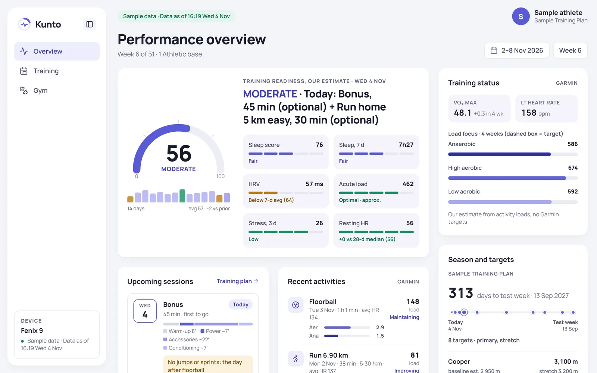
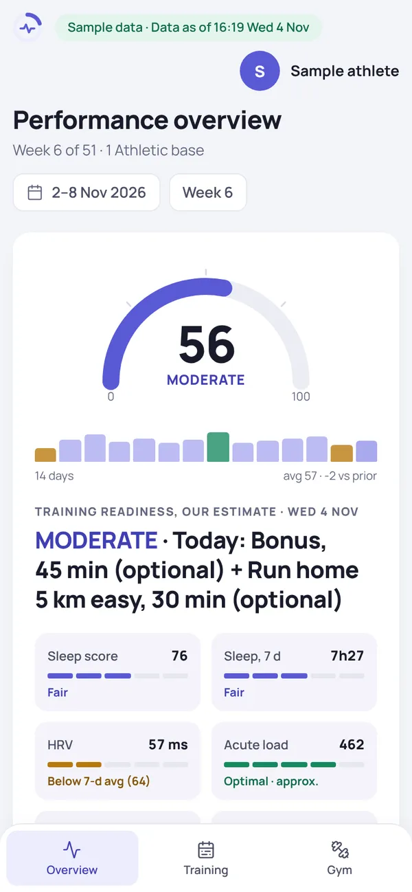
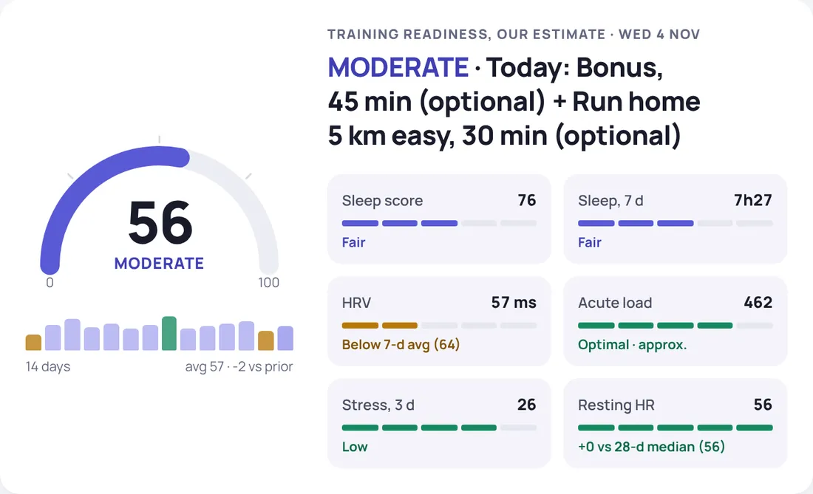
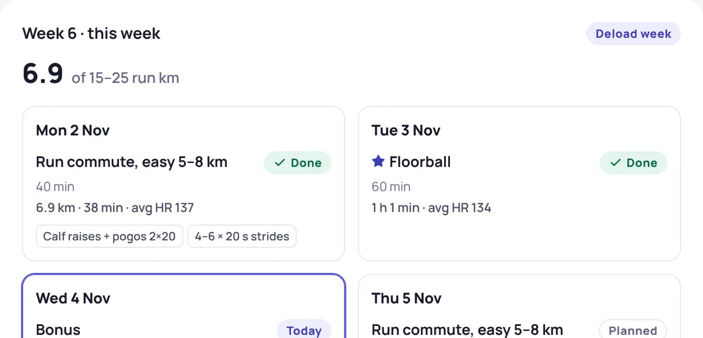
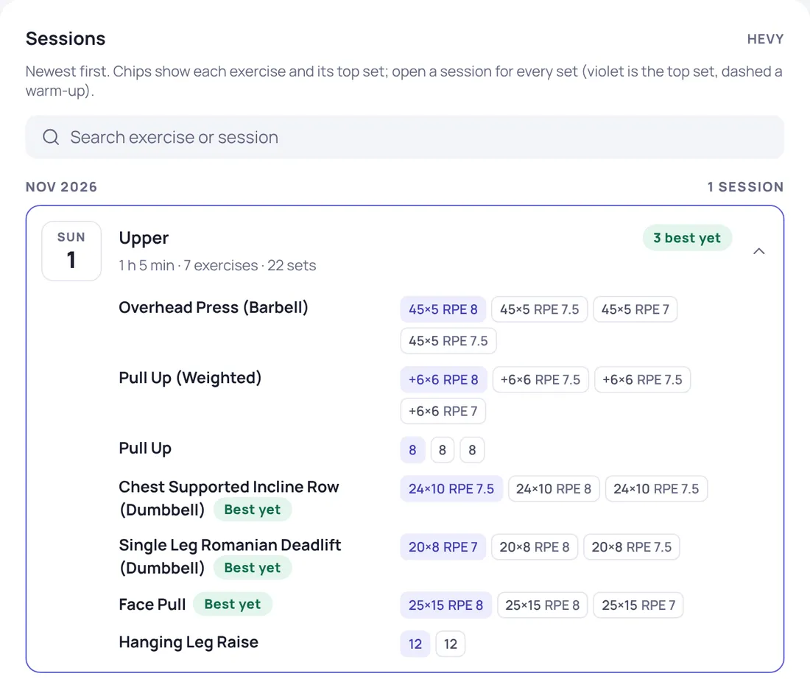

Your training, read in ten seconds.
Kunto turns a Garmin watch and a Hevy gym log into one page that answers three questions every morning, and gives an AI coach read-only access to the same numbers.
A personal project by @henrijantti · Python 3.12 · one static page · tests on every push


How recovered am I?
A readiness score with the reasons next to it, each in plain words.
- Sleep, overnight HRV against its 7-day baseline, resting HR, stress
- Acute load against the optimal range
- Our own estimate where Garmin's API has none, labelled as such

What is on the plan?
The season plan, matched against what the watch and the gym log actually show.
- Every session marked done, moved, swapped, missed or planned
- Gym sessions credited by what was lifted, so a swapped weekend reads as moved
- Run km against the week's target

What goes on the bar?
Every Hevy session's sets, and each lift's next load from the plan's progression rule.
- Top sets highlighted, personal bests flagged
- The rule eases to RPE 7 or less when recovery signals turn
- The same function feeds the page, the weekly report and the AI coach

A coach that reads the log, and cannot write to it
A read-only Model Context Protocol server gives a Claude coaching session five tools over the gym log. It asks for numbers instead of guessing them, and every plan change still needs the athlete's yes.
you › What goes on the bar for squats on Saturday? ⏺ hevy · next_load(exercise="squat") Next loads (Hevy through 2026-11-01, Garmin through 2026-11-04): - 2026-11-07 Sat, Front squat 2×3: deload week: the same load, fewer sets (from Sat 31 Oct, 4×5 @ RPE 7–7.5) coach › The same load as last Saturday, for 2×3. It is a deload week, so the load holds and the sets drop.
Five read-only tools
list_sessions, session_detail, lift_history, find_exercise, next_load. No tool can write to Hevy.
A head coach and two specialists
One session decides and writes. Strength and running skills advise it, and a team review runs at each checkpoint.
Refreshed while I sleep
Scheduled routines pull the data and rebuild the page every morning, and draft a weekly review on Sunday.
Plain files in, one page out
Pullers write tidy CSVs, a JSON plan holds the season, and small pure Python modules bake everything into one self-contained page. No server, no database, no tracking.
Small rules that keep it honest
Credit sessions by what was lifted
The gym log, not the calendar, decides which session was done.
One rule, three readers
The page, the weekly report and the coach's tools call the same function, so they never disagree.
Label every estimate
Where the official API has no readiness or load focus, Kunto computes its own and says so.
Refuse private text
The build checks the page against a list of private terms and fails rather than publish one.
Atomic writes
A crashed build never leaves half a page, and the page's JSON is escaped against script injection.
Approval before change
Routines draft, the athlete decides. Every plan change lands in a dated decision log.
Three commands, sample data included
Python 3.12. The repo ships a fictional athlete's season, so the page builds before you connect anything. Add your own Garmin and Hevy keys when you are ready.
$ git clone https://github.com/henrijantti/Fitness-Coach $ cd Fitness-Coach $ python -m pip install -r requirements.txt $ python tools/build_pages.py --out _site wrote _site: landing page and demo/
See it with sample data
A fictional athlete, six weeks into a season plan.